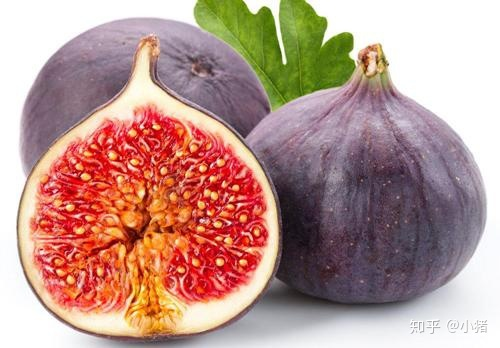

吃无花果的禁忌 哪些人不宜吃无花果 无花果的功效
何师傅聊装修
擅长家装工装网红商业空间现代极简现代简约等各具特色装修风格。
无花果又叫映日果,营养成分丰富多彩,功效与作用高,服用使用价值也高,可生鲜,可生产加工制干、制的果酱、水果汁等,味儿香甜深厚,常常服用能够滋阴降火,合适老少群体服用,那麼在平时的饮食搭配中,牛肉不可以和哪些一块儿吃呢?

无花果不可以和哪些一块儿吃
无花果+大闸蟹:螃蟹营养价值丰富多彩,是凉性食物,独立服用使用价值高,融合无花果一起服用得话会造成拉肚子,乃至损害胃肠。
无花果+鹅肉:鹅肉是凉性食物,营养成分丰富多彩,独立服用有增加抵抗力的作用,融合无花果一起服用,会造成拉肚子等副作用。
无花果+糖块:无花果是糖份高的食材,再和糖份高的糖块一起服用,就会引起肥胖症,活血糖值过多。
无花果+酸橘子:无花果带有很多的绿色植物酸,再融合酸橘子一起服用,会刺激性胃肠,比较严重的乃至损害胃肠粘膜,出現肠胃炎等病症。
无花果宜和哪些一块儿吃 无花果宜和梅头肉、梨、栗子等一起服用。
无花果+梅头肉:梅头肉是猪的部分,营养成分丰富多彩,蛋白含水量低,脂肪率高,含有维他命,融合无花果一起服用,有健胃消食利肠、消肿祛毒的作用。
无花果+梨:梨瓜瓤汁多,口味脆响,常常服用有解毒去火止咳化痰的作用,輔助无花果一起服用得话有止咳润肺的作用。
无花果+栗子:栗子有坚果之王的美誉,栗子瓜瓤浅黄,味儿香甜爽口,能够补肾健脾,融合无花果一起服用有强腰健骨、缓解疲劳的作用。
什么人不适合吃无花果 1、肠胃病病人
无花果的绿色植物酸含水量很高,对胃肠刺激大,因此胃肠病人不适合常常服用无花果这种刺激大的食材。
2、轻度脂肪肝病人
无花果的糖原和植物油脂的含水量较别的食材含水量大,轻度脂肪肝病人服用无花果不适合消化吸收,会让人体造成不适感,要慎重服用。
3、拉肚子者
无花果的绿色植物酸、人体脂肪等含水量大,拉肚子的人服用无花果会加剧病况。
无花果的营养元素
无花果带有丰富多彩的碳水化合物,营养成分极高,所带有的维他命类型丰富多彩,非常是胡罗卜素,还带有矿物(如钙、钾、磷、镁等)、发热量,糖分,膳食纤维素等营养元素,味儿香甜爽口,此外还带有柠檬酸钠、油酸、胰蛋白酶等几种成分。
无花果的功效功效 1、进而起到润肠通便
无花果中带有很多的膳食纤维素,外果皮中含水量更高,可食,常常服用能够刺激性胃肠肠蠕动,推动肠胃排出来排泄物。
2、提高消化吸收作用
无花果中带有很多的葡萄糖酸、盐酸、琥珀酸和胰蛋白酶等成分,常常服用,能够推动胃酸的代谢,进而提高胃肠的消化吸收作用。
3、防止心脑血管疾病
无花果中带有丰富多彩的钾元素,能够合理地调整心率均衡,其次无花果中带有的可溶化学纤维和果胶,能够降低碳水化合物的堆积,因此常常服用能够防止心脑血管疾病。
4、防衰老
成熟期的无花果带有很多的花青素、维他命C等合理的抗氧剂,常常服用,能够消除身体的氧自由基,抑止色素沉淀,合理的减缓细胞衰老。
5、防癌抗癌
无花果的乳浆中有较多的补骨脂素等特异性成份,在水果汁中还带有苯甲醛,这二种化学物质能够合理的防癌抗癌。
无花果的菜谱强烈推荐 1、无花果小老鼠
作法:提前准备无花果小量,草莓半斤,海菜小量,奶油奶酪小量,最先,将1个无花果对半分摆放,用少量海菜裁成三角形做嘴唇,用奶油奶酪画1个适度的小尾巴,用无花果的皮剪适度尺寸的半圆元素做耳朵里面,摆放,用无花果皮的里侧剪1个环形做双眼,用海菜剪1个小圆圈,做眼球,最终往盘里放几颗草莓就能。
作用:有清热去火、健脾胃的作用,合适小孩子常常服用。 2、无花果水果罐头
作法:提前准备无花果适当,老冰糖必须,水适当,最先用石锅将老冰糖放水化掉,将无花果依法取缔清洗,对半割开,再石锅将要熬化老冰糖时放进无花果再次熬煮,煮沸时去掉白沫子,煮至料汁略微粘稠、无花果变松是熄火,装在碗里就能服用。
作用:有止咳润肺、健脾胃和胃、清热去火的作用,合适钟爱甜品的人常常服用。
3、无花果猪简大骨汤
作法:提前准备猪简骨这条,无花果适当,新鲜莲子半碗,枸杞子小量,盐少量、姜5片,最先将猪简骨用沸水清洗整洁预留,将莲籽、无花果清洗,把解决好的猪简骨、无花果、莲籽、生姜片放进煲汤锅中,添加适量冷水,火灾煲开三十分钟再文火慢炖1小时,添加适量的盐等调料,出锅前添加适量枸杞子,就能服用。
作用:常常服用有健脾胃润肺止咳,清热去火的作用。 4、茶树菇无花果鸭汤
作法:提前准备鹅肉200克,无花果适当,茶树菇适当,水和盐等辅材必须,最先把茶树菇无花果清理整洁,自来水侵泡10分鐘后,捞出预留,把清洗的无花果和茶树菇放进锅中,添加适量的水,煲三十分钟,沸腾后添加少量盐等调养调料,就能服用。
作用:有健脾胃、补阴、清热去火、利湿治腹泻的作用。合适大部分人服用。
5、悉尼猪肺汤
作法:提前准备猪肺每斤,无花果10粒,悉尼2个,盐、姜等辅材适当,最先在锅中烧沸水,放进猪肺,烧开后再煮3分鐘,将血沫捞起来,将猪肺清洗预留,在出锅滚油,添加适量生姜片、提前准备好的猪肺,火灾炒过,将悉尼清洗削皮,切割成块,将解决好的猪肺和梨块添加锅中火灾煮一个多钟头,熄火前添加适量的盐调料,就能服用。
作用:有止咳润肺、清热去火等作用。
无花果是健康食品,但假如不恰当地将无花果和某些相冲食材同吃,就会具有反实际效果。因而服用无花果前,应当掌握吃无花果的禁忌。无花果,你吃没错吗?
本文由每日生活网整理首发